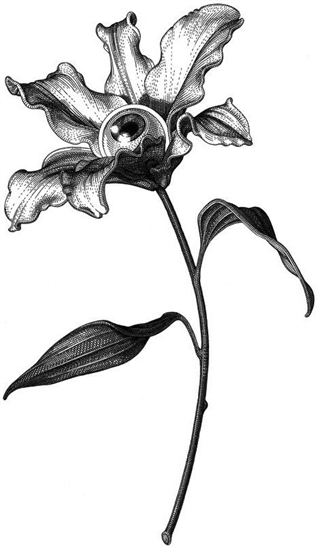

NARCISSE
"Un narcissique, c'est quelqu'un qui ne veut pas m'admirer." Pierre DESPROGES
Le narcissisme est souvent appréhendé dans une conception péjorative d’amour exacerbé de soi, d'autocentrisme, d’investissement exclusif de soi au détriment de l’investissement d’objet, l'autre dans la relation qui apparaît comme secondaire voire utilitaire. Le "Narcisse", d’ailleurs, est le plus souvent considéré sous un regard psychopathologique, connoté à un trait maladif de la personnalité comprenant de l'infatuation, le besoin constant d'admiration, de l'indifférence à autrui et l'absence habituelle de scrupules. Pourtant cet Eros intérieur représenté par ce narcissisme est, en fait, la base fondamentale de tout être humain. L’amour-propre, car il s’agit bien de cela, est le socle sur lequel la vie psychique peut s’édifier, et ce n’est que quand il a été compromis, ou blessé, qu’il engendre des difficultés.
Je me suis souvent demandé (et je me demande encore) quelle était la nature du lien possible avec autrui ? Comment faire pour se sentir à la fois libre et en relation ? Pourquoi certaines personnes sont-elles empêchées d’avoir des relations authentiques où l’autre a toute sa place ? ou bien pourquoi ne peuvent-elles vivre que des relations dans lesquelles l’un n’est nullement présent à l’autre, ne se présente pas à lui, où chacun se borne à jouir de soi même à propos de l’autre ?
Le terme de narcissisme a été introduit par la psychanalyse pour décrire l’amour qu’un individu porte envers lui-même, en référence au mythe grec de Narcisse. Ce personnage était tombé amoureux d’un autre, sans savoir qu’il s’agissait de sa propre image reflétée par la surface de l’eau. Freud utilise pour la première fois le terme de narcissisme en 1910 pour décrire le choix d’objet effectué par les homosexuels qui choisissent un partenaire à leur image, de sorte qu’à travers lui "ils se prennent eux-mêmes comme objet sexuel." Peu après, Freud fait du narcissisme un stade intermédiaire du développement psychosexuel infantile, situé entre l’auto-érotisme, dont le modèle est la masturbation, et le stade évolué caractérisé par l’amour d’objet. Il décrit un narcissisme primordial, qu’il nomme narcissisme primaire, dans lequel l’enfant se prend lui-même comme objet d’amour et comme centre du monde, avant de se diriger vers des objets extérieurs, l'autre…
Donc cet amour fondamental, en fonction de son point d'origine, intrinsèque ou extrinsèque, va qualifier la communication ainsi que la relation. Il est tentant de transposer ce raisonnement dans la sphère relationnelle où deux pulsions très encombrantes font obstacle à la relation : le désir de fusion et le désir d’emprise. L’enjeu relationnel est le même dans les deux cas : supprimer la différence. Pour citer le psychanalyste Jacques LACAN, "aimer, c'est vouloir être aimer." On peut donc en déduire qu'un amour suffisant tourné vers soi limite l'exagération du besoin d'être aimé et ainsi s'autoriser à rajouter : "s'aimer, c'est pouvoir aimer l'autre."
Complétons avec le processus de formation de l’identité qui passe par cette identification narcissique favorisant la différenciation et qui permet de se construire en tant que soi. Etre soi, singulier, vivre sa différence en respectant celle de l’autre, sans le nier ni l’agresser, est un chemin de différenciation. Ce processus de différenciation est impératif pour assurer le fondement de son identité et pour s’ouvrir à l’altérité. Cependant, une insuffisance de confirmation existentielle constitue un obstacle à ce chemin d’individuation. Des difficultés à ce niveau peuvent entraîner à l’âge adulte des problèmes identitaires et des désordres dans la relation. Il sera difficile d’assumer sa propre différence et on se trouvera face à des situations où il n’y a pas de place pour deux, où l’on ne peut être que tout puissant ou écrasé, humiliant ou humilié, où si l’un existe trop l’autre disparaît… "J’ai besoin que l’autre soit d’accord avec moi, voie les choses comme moi pour me sentir bien, s’il ne fait pas un avec moi, je n’existe plus."
Rajoutons ici un modèle développemental basé sur des déficits plutôt que sur des conflits intrapsychiques. La conception du narcissisme paraît précieuse dans l’approche des troubles et carences narcissiques et abandonniques et ses conséquences comme le manque d'affirmation, de prise de décision, des toxicomanies ou d'état anxio dépressif, la dépression pouvant être vue comme la maladie du narcissisme ! Ce déficit d'amour propre peut être utilisé et transposé dans une approche Ericksonienne et sous cette aura, les déficits deviennent des marqueurs de besoins inconscients et la non affirmation et le doute marquent l'inaccession à ses derniers.
Je me suis souvent demandé (et je me demande encore) quelle était la nature du lien possible avec autrui ? Comment faire pour se sentir à la fois libre et en relation ? Pourquoi certaines personnes sont-elles empêchées d’avoir des relations authentiques où l’autre a toute sa place ? ou bien pourquoi ne peuvent-elles vivre que des relations dans lesquelles l’un n’est nullement présent à l’autre, ne se présente pas à lui, où chacun se borne à jouir de soi même à propos de l’autre ?
Le terme de narcissisme a été introduit par la psychanalyse pour décrire l’amour qu’un individu porte envers lui-même, en référence au mythe grec de Narcisse. Ce personnage était tombé amoureux d’un autre, sans savoir qu’il s’agissait de sa propre image reflétée par la surface de l’eau. Freud utilise pour la première fois le terme de narcissisme en 1910 pour décrire le choix d’objet effectué par les homosexuels qui choisissent un partenaire à leur image, de sorte qu’à travers lui "ils se prennent eux-mêmes comme objet sexuel." Peu après, Freud fait du narcissisme un stade intermédiaire du développement psychosexuel infantile, situé entre l’auto-érotisme, dont le modèle est la masturbation, et le stade évolué caractérisé par l’amour d’objet. Il décrit un narcissisme primordial, qu’il nomme narcissisme primaire, dans lequel l’enfant se prend lui-même comme objet d’amour et comme centre du monde, avant de se diriger vers des objets extérieurs, l'autre…
Donc cet amour fondamental, en fonction de son point d'origine, intrinsèque ou extrinsèque, va qualifier la communication ainsi que la relation. Il est tentant de transposer ce raisonnement dans la sphère relationnelle où deux pulsions très encombrantes font obstacle à la relation : le désir de fusion et le désir d’emprise. L’enjeu relationnel est le même dans les deux cas : supprimer la différence. Pour citer le psychanalyste Jacques LACAN, "aimer, c'est vouloir être aimer." On peut donc en déduire qu'un amour suffisant tourné vers soi limite l'exagération du besoin d'être aimé et ainsi s'autoriser à rajouter : "s'aimer, c'est pouvoir aimer l'autre."
Complétons avec le processus de formation de l’identité qui passe par cette identification narcissique favorisant la différenciation et qui permet de se construire en tant que soi. Etre soi, singulier, vivre sa différence en respectant celle de l’autre, sans le nier ni l’agresser, est un chemin de différenciation. Ce processus de différenciation est impératif pour assurer le fondement de son identité et pour s’ouvrir à l’altérité. Cependant, une insuffisance de confirmation existentielle constitue un obstacle à ce chemin d’individuation. Des difficultés à ce niveau peuvent entraîner à l’âge adulte des problèmes identitaires et des désordres dans la relation. Il sera difficile d’assumer sa propre différence et on se trouvera face à des situations où il n’y a pas de place pour deux, où l’on ne peut être que tout puissant ou écrasé, humiliant ou humilié, où si l’un existe trop l’autre disparaît… "J’ai besoin que l’autre soit d’accord avec moi, voie les choses comme moi pour me sentir bien, s’il ne fait pas un avec moi, je n’existe plus."
Rajoutons ici un modèle développemental basé sur des déficits plutôt que sur des conflits intrapsychiques. La conception du narcissisme paraît précieuse dans l’approche des troubles et carences narcissiques et abandonniques et ses conséquences comme le manque d'affirmation, de prise de décision, des toxicomanies ou d'état anxio dépressif, la dépression pouvant être vue comme la maladie du narcissisme ! Ce déficit d'amour propre peut être utilisé et transposé dans une approche Ericksonienne et sous cette aura, les déficits deviennent des marqueurs de besoins inconscients et la non affirmation et le doute marquent l'inaccession à ses derniers.

Succinctement, on peut graduer le narcissisme avec l’hypo-narcissisme qui renvoie à toutes ces personnes qui, lorsque vous les rencontrez, insistent sur ce qui est défaillant, elles ne sont jamais "assez" et ont une grande capacité à se dévaloriser. Vous les complimentez, mais elles vous répondent en victimes : "Oh non, j’ai bonne mine mais en réalité je ne suis pas en forme." Quand l’hyper-narcissique, autocrate, ne cesse de se vanter, d’étaler ses plus par sa fatuité, l’hypo-narcissique fait le pari, pour exister aux yeux des autres, d’être moins plutôt que rien. Puis il y a le juste narcissique, l'égotique mesuré qui se vit dans une relation apaisée avec lui-même. Il vit dans la capacité de s’aimer sereinement, sans regarder sans cesse les horloges du temps qui passe et les miroirs. Il enrichit ses liens affectifs, travaille pour être efficace, éprouve du plaisir à la tâche et pas seulement pour ramener médailles et reconnaissance. Enfin, il se préoccupe autant de son corps que de son âme. Il n'évite pas les ressentis tant sensoriels qu'émotionnels.
Le narcissisme se présente bel et bien comme une notion nodale avec de multiples versions, des affluents et confluents, des contradictions et paradoxes, à l’image même de la complexité du psychisme humain et de son économie. Ce concept réfère donc à la perception que le sujet a de lui-même, à la représentation de lui-même et aux affects que cette perception et cette représentation soulèvent. Qu’il s’agisse d’un repli sur soi, d’une recherche de soi à travers l’autre, du narcissisme quotidien qui accompagne la perception de soi dans différentes situations, le sentiment de soi, le sentiment pour soi, le sentiment face à soi, il s’agit d’autant de formes narcissiques que cet ingrédient constitutionnel et structurant peut offrir. L’amour de soi est fondamental à l’amour au sens large, à la capacité d’aimer. L’amour narcissique précède l’amour objectal et aucun investissement objectal n’absorbe totalement l'énergie narcissique. C’est donc du narcissisme que sont puisés les investissements d’objets et leurs réussites. L’estime de soi, dépend intimement de notre égocentrisme. Par contre, dépendre de l’amour de l’objet investi apporte peu d’estime de soi.
Alors, pour bonifier son autocentrisme, le rendre en adéquation d'avec ses valeurs et aspirations, pour le rendre efficacement constructif, le repli sur soi est nécessaire pour trouver une oméostasie psychologique, équilibre entre les besoins et leur satisfaction. Et cela passe par l'acceptation de la différence avec l'autre, de la critique, de la frustration et de la confrontation à l'échec. Puis, considérer l'amour comme ingrédient central : diverses formes d’amour de soi sont nécessaires pour parvenir à se soigner, prendre soin de soi, se respecter, s’amuser, se faire plaisir, s’estimer, et s'axer positivement sur l'autre. Mais également, l'amour de l'autre dans son acceptation, que l'autre puisse aimer sans condition aucune, favorise l'adaptation narcissique. A contrario, le Narcisse pathologique a besoin de l'autre, dans une approche souvent instrumentale voire manipulatrice et destructrice. La recherche acharnée d'un statut spécial, la nécessité impérieuse de tout contrôler afin de parvenir à ses fins, engendre des pensées et croyances rigides et une souffrance psychique souvent masquée par une façade socio-relationnelle de sur-assurance.
Donc s'auto flatter, s'investir, se ressentir positivement, s'aimer en balancement avec une remise en question régulière, des moments de doute et d'interrogation marquent un narcissisme sein. Celui-ci passe par l'acceptation de ses limites .
Le narcissisme se présente bel et bien comme une notion nodale avec de multiples versions, des affluents et confluents, des contradictions et paradoxes, à l’image même de la complexité du psychisme humain et de son économie. Ce concept réfère donc à la perception que le sujet a de lui-même, à la représentation de lui-même et aux affects que cette perception et cette représentation soulèvent. Qu’il s’agisse d’un repli sur soi, d’une recherche de soi à travers l’autre, du narcissisme quotidien qui accompagne la perception de soi dans différentes situations, le sentiment de soi, le sentiment pour soi, le sentiment face à soi, il s’agit d’autant de formes narcissiques que cet ingrédient constitutionnel et structurant peut offrir. L’amour de soi est fondamental à l’amour au sens large, à la capacité d’aimer. L’amour narcissique précède l’amour objectal et aucun investissement objectal n’absorbe totalement l'énergie narcissique. C’est donc du narcissisme que sont puisés les investissements d’objets et leurs réussites. L’estime de soi, dépend intimement de notre égocentrisme. Par contre, dépendre de l’amour de l’objet investi apporte peu d’estime de soi.
Alors, pour bonifier son autocentrisme, le rendre en adéquation d'avec ses valeurs et aspirations, pour le rendre efficacement constructif, le repli sur soi est nécessaire pour trouver une oméostasie psychologique, équilibre entre les besoins et leur satisfaction. Et cela passe par l'acceptation de la différence avec l'autre, de la critique, de la frustration et de la confrontation à l'échec. Puis, considérer l'amour comme ingrédient central : diverses formes d’amour de soi sont nécessaires pour parvenir à se soigner, prendre soin de soi, se respecter, s’amuser, se faire plaisir, s’estimer, et s'axer positivement sur l'autre. Mais également, l'amour de l'autre dans son acceptation, que l'autre puisse aimer sans condition aucune, favorise l'adaptation narcissique. A contrario, le Narcisse pathologique a besoin de l'autre, dans une approche souvent instrumentale voire manipulatrice et destructrice. La recherche acharnée d'un statut spécial, la nécessité impérieuse de tout contrôler afin de parvenir à ses fins, engendre des pensées et croyances rigides et une souffrance psychique souvent masquée par une façade socio-relationnelle de sur-assurance.
Donc s'auto flatter, s'investir, se ressentir positivement, s'aimer en balancement avec une remise en question régulière, des moments de doute et d'interrogation marquent un narcissisme sein. Celui-ci passe par l'acceptation de ses limites .
EN RELATION


OSER
AFFIRMATION
CUPIDE-ON
CORPS
CONFIANCE
PERSONNALITE
ESTIME